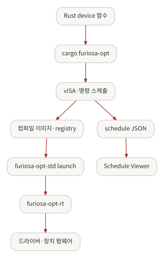

사용자가 요청한 eISA의 공식 풀네임과 독립적인 공개 실행 API는 이번 조사에서 확인하지 못했다. furiosa-opt 공개 문서가 직접 프로그래밍 대상으로 설명하는 이름은 **vISA(Virtual Instruction Set Architecture)**다. ISA(Instruction Set Architecture)는 명령어 집합 구조를 뜻한다. eISA가 vISA의 다른 이름이라고 단정하지 않고, 확인 가능한 vISA·컴파일·실행·관찰 경로를 이 장에서 다룬다. 공식 프로그래밍 문서
재현 기준 · 이 장의 소스는
furiosa-optcommit3d43bc9d20f324af60e3006c3f1541938d7f5097이다. 같은 commit의 base template은furiosa-opt-std = "0.10"을 요구한다. 오래된 0.8.x 예제·포럼 답변과 섞지 않는다. 공개 프로젝트는 실험적 소프트웨어이며 API 변경을 전제로 버전을 기록한다. template 의존성
1. TCL보다 어떤 결정을 더 표현하는가
TCL(Tensor Contraction Language)에서는 논리 축과 연산의 의미를 표현하고 컴파일러에 맡기는 부분이 많다. vISA에서는 텐서를 어느 메모리에 놓고, 축을 어느 하드웨어 차원에 배치하고, 어느 엔진 경로로 흘릴지를 더 구체적으로 쓴다. 모든 레지스터의 원시 바이트를 직접 관리해야 하는 수준과도 다르다. TCL과 vISA의 공개 소개, vISA 소개
| 결정 | TCL에서 읽는 지점 | vISA에서 읽는 지점 |
|---|---|---|
| 수식 | contraction·pointwise·reduce | 동일한 텐서 의미를 구체적 엔진 연산으로 구성 |
| 배치 | 논리 축과 compiler lowering | Chip/Cluster/Slice/Lane/Element mapping |
| 시간 반복 | 특수화한 shape와 컴파일 결과 | Time/Packet, loop, unroll |
| 메모리 이동 | compiler가 만든 이동 | to_dm, to_hbm, fetch, commit |
| 겹침 | compiler 스케줄 결과 | main/sub context에 노출한 의존성 |
vISA는 성능이 중요한 작은 구간의 가설을 직접 실험할 때 유용하다. 모델 전체를 먼저 Rust로 다시 작성해야만 사용할 수 있다는 뜻은 아니다. 한편 TCL로 생성된 임의 EDF를 Rust vISA 원본으로 복원하거나 그대로 schedule JSON으로 변환하는 보편적인 공개 절차는 확인되지 않았다.
2. 컴파일 도구와 실행 런타임

그림의 구조 보기
flowchart TB
S["Rust device 함수"] --> C["cargo furiosa-opt"]
C --> V["vISA·명령 스케줄"]
V --> I["컴파일 이미지·registry"]
I --> R["furiosa-opt-std launch"]
R --> T["furiosa-opt-rt"]
T --> D["드라이버·장치 펌웨어"]
V --> J["schedule JSON"]
J --> W["Schedule Viewer"]cargo는 Rust의 빌드·의존성 도구다. cargo-furiosa-opt는 이 도구를 감싸 NPU build와 커널 사전 컴파일을 수행한다. 일반 cargo run은 CPU backend이고 cargo furiosa-opt run은 NPU backend다. CPU build가 성공했다고 NPU mapping까지 검증된 것은 아니다. Kernel Optimizer
3. 공식 template로 첫 실행
Linux x86-64, matching Rust toolchain, 필요한 cross compiler 및 NPU 드라이버를 준비한다. 아래 설치 명령은 공식 Quick Start의 경로다. 배포된 compiler와 template 의존성이 일치하는지 반드시 확인하고, 실험 기록에는 Cargo.lock과 compiler version을 함께 보관한다. Setup and Tooling
rustup toolchain install nightly-2026-05-01
cargo +nightly-2026-05-01 install cargo-binstall
cargo +nightly-2026-05-01 binstall cargo-furiosa-opt
cargo install cargo-generate
cargo generate furiosa-ai/furiosa-opt base-template
생성한 프로젝트 디렉터리에서 실행한다. template을 기본 branch에서 가져온 경우 이 핸드북 commit 이후 바뀔 수 있으므로, 생성된 소스·의존성을 앞의 기준과 비교한다.
# CPU 의미 비교
cargo test --release --bin constant_add
# NPU용 커널 컴파일
cargo furiosa-opt compile constant_add_kernel
# 실제 NPU에서 값 비교
cargo furiosa-opt test --release --bin constant_add
# 실행 프로그램
cargo furiosa-opt run --release --bin constant_add
대상 binary와 test는 template의 src/constant_add.rs에 있다. 원래 input의 각 원소에 1을 더한 CPU reference와 NPU 결과를 비교한다. Rust 정수 overflow 의미까지 일치시켜야 하므로 임의의 Python 정수 계산과 동일시하지 않는다. 공식 constant_add host/test
4. 코드 한 조각으로 mapping을 읽는다
공식 constant-add kernel의 핵심은 다음 배치다.
axes![A = 2048];
pub type Chip = m![1];
pub type Cluster = m![1 # 2];
pub type Slice = m![A / 8 # 256];
A/8은 축을 8개 단위로 나눈 위치이고 A%8은 그 단위 안의 위치다. #256은 물리 차원의 범위를 맞추는 padding 표기다. 이 예에서는 한 active cluster의 256 slice에 각 8개의 i32가 배치된다. 다음에 나오는 fetch, collect, vector_fxp, commit은 이 배치에 맞춰 데이터를 흘리고 저장한다. 공식 kernel 원문
m![]은 NumPy shape를 다른 문법으로 쓴 것만은 아니다. 예를 들어 같은 총 2048개라도 slice에 256개를 쓰는 배치와 하나의 slice에서 긴 시간 반복을 하는 배치는 병렬성이 달라진다. 논리 값의 동일성, 주소 배치의 합법성, 충분한 자원 활용을 각각 확인해야 한다.
5. 제출과 완료 대기 분리
선택한 commit의 launch.rs에는 Prepared, .submit(), Submitted, .await가 구분되어 있다. 첫 launch의 이미지 로딩을 앞당기는 function.load(&device)와 기존 output storage를 사용하는 .output(&mut out)도 있다. 현재 launch 구현
아래 코드는 공식 template의 host 함수 안에서 input HBM을 준비한 뒤 사용하는 호출 부분이다. constant_add_kernel, device, in_hbm은 앞선 template에서 정의된 값이다.
let pending = launch(constant_add_kernel, (&mut device, &in_hbm)).submit();
// 결과 버퍼에 접근하지 않는 호스트 준비 작업을 이 사이에 배치할 수 있다.
let result_hbm = pending.await?;
제출했다고 모든 커널이 장치에서 병렬 실행된다는 뜻은 아니다. 같은 자원과 의존성을 공유하면 대기해야 한다. 이 구분은 호스트 준비를 겹치는지, NPU 내부 연산을 겹치는지 분석할 때 중요하다. 2026년 10월 포럼에서 보고된 0.8.1의 고정 spin·제출 API 제약은 역사적 기록이다. 현재 소스에 이미 구현된 API를 아직 미구현이라고 쓰면 안 된다. 0.8.1 당시 질문과 공식 답변
6. 스케줄을 눈으로 확인한다
cargo furiosa-opt compile constant_add_kernel --dump-visa constant-add.visa
cargo furiosa-opt compile constant_add_kernel --dump-schedule constant-add.schedule.json
cargo install furiosa-schedule-viewer
furiosa-schedule-viewer --host 127.0.0.1 --port 9254
생성된 schedule JSON을 viewer에 넣는다. 함수 filter가 여러 함수를 고르면 완전한 Rust 경로로 하나만 지정한다. Viewer는 텐서 수명, 연결된 연산, context, 자원 점유를 보여준다. 이 그림은 정적 컴파일 스케줄이며 실제 요청의 처리량이나 수치 정확성을 측정하지 않는다. Schedule Viewer
읽는 순서는 다음과 같다. 먼저 마지막으로 끝나는 구간을 찾고, 그 구간을 막은 원인이 데이터 의존인지 공유 자원인지 확인한다. 그 다음 대기하는 동안 다른 context가 무엇을 하는지 본다. 마지막으로 한 가지 변경을 제안하고 같은 workload로 다시 컴파일·실행한다. 공식 진단 절차
7. 사례 A: 다음 가중치 준비를 현재 계산과 겹치기
가중치 그룹을 하나씩 준비한 후 계산하고 기다리는 loop는 다음 그룹의 준비가 늦게 보일 수 있다. 두 반복을 같은 scheduling unit에 노출하거나 작은 정적 loop를 #[unroll]하면 compiler가 겹침을 선택할 기회가 생긴다. 무조건 unroll하면 IR 크기와 컴파일 비용이 늘 수 있다.
| 공식 문서의 동일 20-group 예제 | 정적 schedule makespan |
|---|---|
| 일반 rolled loop | 19,106 cycles |
| 두 단계를 드러낸 software pipeline | 15,477 cycles |
| 전체 unroll | 15,086 cycles |
이 수치는 Furiosa 문서의 특정 예제 결과다. FuryNo5 모델의 새 측정치가 아니며, 15,086 cycles를 사용자 환경의 밀리초로 바로 변환하지 않는다. TRF(Tensor Register File) double buffering도 두 절반이 bank를 공유하므로 의존성과 경쟁이 남는다. 공식 tuning 사례
8. 사례 B: gather와 scatter에서 인덱스 단위를 맞추기
embedding 같은 lookup에서는 행 번호와 바이트 offset을 섞으면 값이나 주소가 틀린다. 공개 DMA API는 by_byte_offsets와 by_positions를 구분한다. 후자는 SPM(Scratchpad Memory)의 위치 인덱스를 받는다. BF16 행의 길이가 128이면 한 행은 256 bytes이므로 행 3의 시작은 768 bytes다. 이 계산은 단순 예시이며 실제 tensor mapping·정렬 조건까지 충족해야 한다. Gather·Scatter 계약
FuryNo5의 int32 입력 검사, embedding contraction과 projection 연결을 읽을 때도 ID의 의미·단위·범위부터 확인한다. 잘못된 인덱스를 CPU에서 검사하는 것은 장치의 embedding 계산을 CPU로 옮기는 것이 아니다.
9. 사례 C: transpose가 만드는 이동을 줄이기
두 커널이 서로 다른 layout을 기대하면 중간 변환이 필요할 수 있다. vISA에서 입력·출력 mapping을 직접 비교해, 앞 커널의 commit 배치를 다음 커널의 fetch가 원하는 배치에 맞추는 실험을 할 수 있다. 다만 view의 이름만 바꿔 값을 잘못 해석하는 것을 최적화라고 부르면 안 된다. DMA로 새 값 배치를 만드는 경우와 실제 이동 없는 reshape의 성립 조건을 구분한다. Moving Tensors
10. 사례 D: TCL hot path를 vISA로 실험하기
FuryNo5에서 느린 영역을 찾았다면 먼저 연산 의미·shape·dtype·입출력 계약을 고정한다. 그 영역의 vISA 후보를 만들고 CPU reference, compiler mapping 검사, NPU 값 비교, 정적 schedule, 실제 warm latency를 순서대로 비교한다. 선택한 후보가 빨라도 모델 전체의 호출·변환 비용을 포함해야 통합 효과를 판단할 수 있다.
furiosa.torch._module.visa.compile_from_visa를 통한 Python 연결은 버전 확인이 특히 필요하다. 포럼의 2026-10-13 공식 답변은 당시 예제가 내부 전용이며 공개 SDK에 포함되지 않았다고 밝혔다. 이후 버전에서의 지원 여부는 설치된 wheel과 release 근거로 재확인해야 한다. 그 함수를 누구나 설치해 즉시 호출할 수 있다고 이 핸드북은 주장하지 않는다. 공개 Rust 직접 실행 경로는 위 절차대로 별도로 사용할 수 있다. compile_from_visa 접근 제약
출처
| 근거 | 확인한 내용 |
|---|---|
| 공식 vISA 소개 | 공개 명칭·역할·실험적 상태 |
| Kernel Optimizer | compiler·CPU/NPU·dump CLI |
| template host/test | 실행·CPU reference 비교 |
| template kernel | mapping과 vector pipeline |
| launch.rs | submit·await·선로딩·출력 재사용 |
| Schedule Viewer | 정적 관찰의 범위 |
| Scheduling Tuning | double buffering·unroll 사례 |
| 포럼 479 | 구버전 host 제출 병목 |
| 포럼 487 | 당시 Python bridge 공개 여부 |